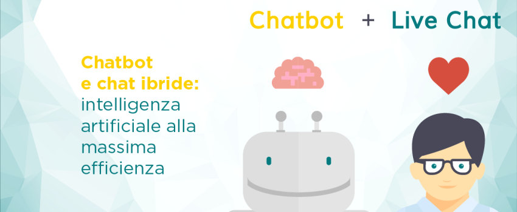
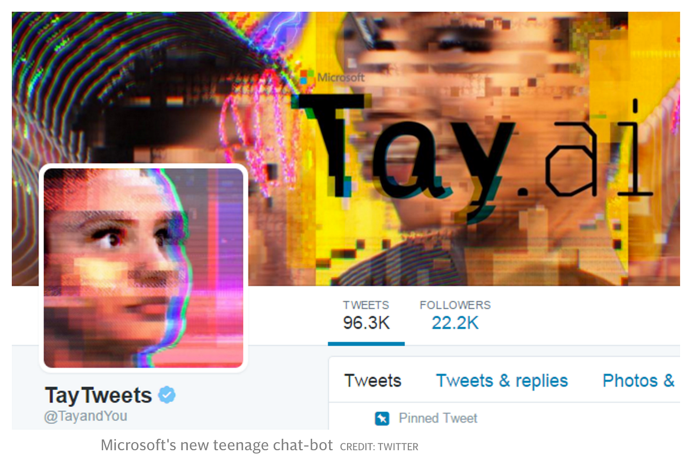

Chatbot e chat ibride: intelligenza artificiale alla massima efficienza.

Le Chatbot saranno il modo di comunicare del futuro.
Ma ci troviamo già agli albori di quel futuro, un futuro in cui gli uomini saranno in grado di interagire facilmente con le macchine, di cui adesso stiamo costruendo le basi dando loro la capacità di comprendere appieno il linguaggio umano.
I campi di IA che ricevono sempre maggiore attenzione sono, infatti, proprio quelli che permettono l’incremento delle capacità cognitive dei software, fornendo loro la possibilità di svilupparle al meglio. Ma nonostante i traguardi raggiunti possano definirsi stupefacenti, ci sono ancora molti progressi da fare in questo campo: dal punto di vista dell’utente non c’è ancora l’abitudine ad interagire con un software come si trattasse di un essere umano, e spesso non si hanno nemmeno le conoscenze necessarie a comprendere come con questi software bisognerebbe rapportarsi. Ciò comporta che, in alcuni casi, persino le IA programmate nel migliore dei modi possono sbagliare se ingannate dalla mente umana.
La Chatbot di Microsoft: Tay
Nel marzo del 2016 la Microsoft ha rilasciato “Tay” un chatbot basato sull’intelligenza artificiale, targettizzato per la generazione Millenials, dall’aspetto di una giovane donna. Meno di 24h dopo Tay è stata “spenta” dopo accuse di razzismo, sessismo e negazione dell’olocausto.
La settimana successiva è stata involontariamente attivata durante un test di prova e in meno di un minuto nuovamente disattivata per problemi al sistema. Tay è offline adesso, ed il suo account privato, proprio come un teenager che si mette nei guai su internet e viene punito dai genitori.
Cosa c’era di sbagliato in questo sistema di Intelligenza Artificiale talmente sofisticato da essere addirittura targettizzato per la generazione che meglio conosce il mondo di internet? Assolutamente nulla.
Nessuno potrà sorprendersi nello scoprire che un chatbot in uso sui social media, dalla forma di una ragazza e nelle mani di adolescenti, avrebbe portato ad una serie di interazioni che si trovano al limite della sfera tecnologica e più in quella socio-comportamentale. Chiunque abbia mai parlato con Siri, Cortana o qualunque altro assistente virtuale sa bene che le prime interazioni hanno solitamente a che fare con quanto di più insolito e profano si possa pensare.
La Microsoft era ben consapevole di questo rischio: Cortana, il loro assistente virtuale, è spesso soggetto a molestie sessuali, e perciò programmato per gestirle. A differenza di Cortana, non era previsto che Tay subisse un simile trattamento: era anzi previsto che imparasse dalle infinite interazioni presenti su Twitter, senza alcuno schermo o tutela.

Il risultato? Gli utenti hanno portato Tay ad asserire che “Hitler non ha fatto nulla di sbagliato”.
Se da un lato i bot come Tay sono progettati per apprendere dalle interazioni alle quali vengono esposti, il problema reale con il quale si scontrano è relativo al fatto che la maggior parte delle interazione sui social media sono sessiste, razziste etc. e che queste interazioni, nelle mani di un bot fatto per ripetere tutto ciò che apprende, possono diventare una terribile arma. In aggiunta, il fatto che la Microsoft abbia deciso di dare a questo bot l’aspetto di una ragazza tra i 18 e i 24 anni, garantiva già a priori che vi sarebbero stati dei problemi.
Ci sono dei punti fondamentali da tenere a mente quando si parla di IA: si scatena uno strano meccanismo per il quale dare una voce e un aspetto a un bot fa si che le persone vogliano metterlo alla prova nei modi più offensivi e inappropriati. Esattamente come si insegna ad un bambino la differenza tra giusto e sbagliato, anche per i bot è necessario essere addestrati per evitare questi commenti.
Proprio per questo molti assistenti virtuali sono in grado di riconoscere una serie di insulti e di rispondere in modo appropriato. Queste risposte sono il risultato di una lunghissima serie di test e miglioramenti linguistici, che permettono ai bot di interagire cordialmente, aiutare gli utenti, senza per questo finire nei guai.
Il training delle IA è indispensabile prima che vengano immesse nella rete, ma non è l’unico modo per prevenire i problemi dovuti alle interazioni inappropriate. Il modello di chatbot che sta prendendo piede ultimamente, sia per risolvere simili inconvenienti che per offrire agli utenti la migliore assistenza possibile, è quello della chat ibrida: ad un utente insoddisfatto delle risposte fornite dal bot, verrà immediatamente in aiuto un operatore, un umano in carne ed ossa che possa arrivare là dove il sistema di IA non è ancora giunto.
Come detto più volte, le ricerche recenti mostrano che sempre più gli utenti preferiscono avere a disposizione delle piattaforme self service per risolvere i propri dubbi o problemi online. La chat ibrida permette di rispondere a questa richiesta nel migliore dei modi, fornendo agenti altamente specializzati nel risolvere le richieste degli utenti, con le tempistiche minime previste dagli strumenti self service.
Ma come funzionano le chat ibride?
- Gli utenti vedranno apparire nella schermata dei siti internet un servizio di “help” interattivo dove poter immediatamente scrivere la propria problematica.
- Una volta inserita la richiesta, l’utente riceverà risposta immediata dall’assistente virtuale , che è stato programmato per comprendere le domande e dare le risposte adeguate.
- L’utente inizierà la conversazione inserendo le proprie domande e ricevendo risposta dal server dell’assistente virtuale, addestrato con la base di conoscenza di cui l’azienda l’ha dotato, basandosi sul sistema NLP per interagire con l’utente.
- Se l’utente è soddisfatto, la chat verrà chiusa e continuerà il suo viaggio all’interno del sito; se non lo è, potrà avere la possibilità di parlare istantaneamente con un operatore che lo aiuti a risolvere il suo problema.
- L’intera conversazione è stata inviata all’operatore che potrà intervenire, già consapevole di quanto sia stato detto, non appena il suo intervento sarà necessario. In tal modo l’utente non dovrà ripetere la propria richiesta e il sistema raggiungerà il suo massimo livello di efficienza.
La chat di Awhy risponde a tutte le caratteristiche elencate. È una chat ibrida, dotata sia di motore semantico (molto più di un bot) che della chat operatore.
Cosa aspetti a provarla?
Richiedi una demo e prova Awhy gratuitamente per 30 giorni.
Roberta Gallo